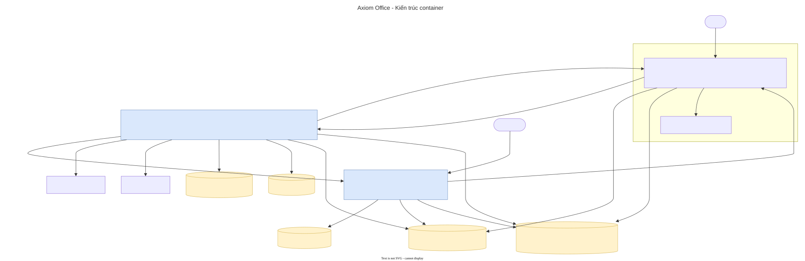
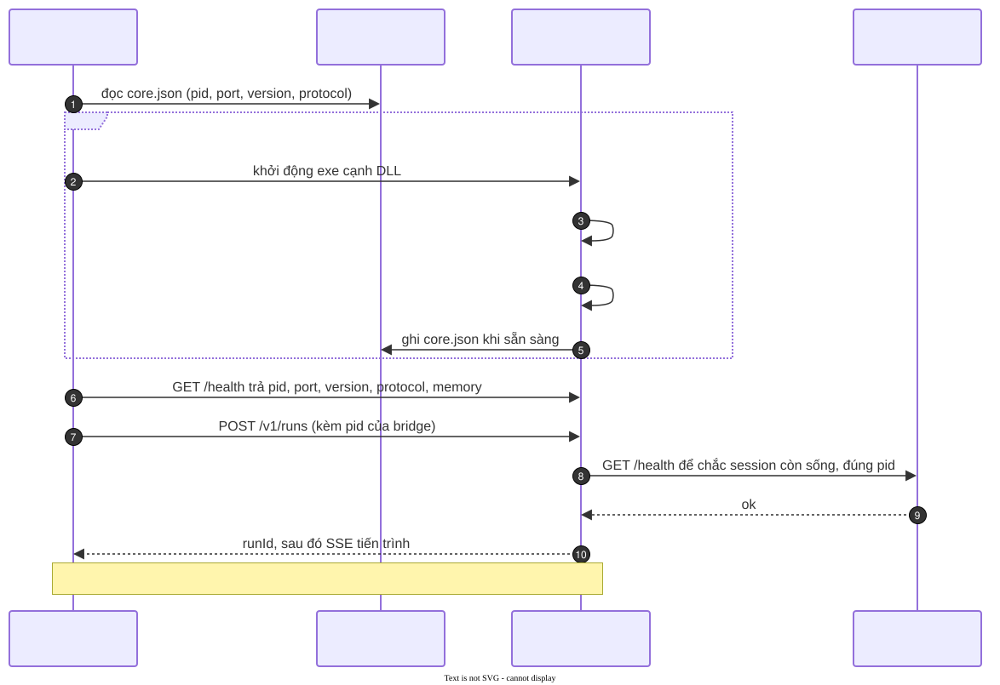
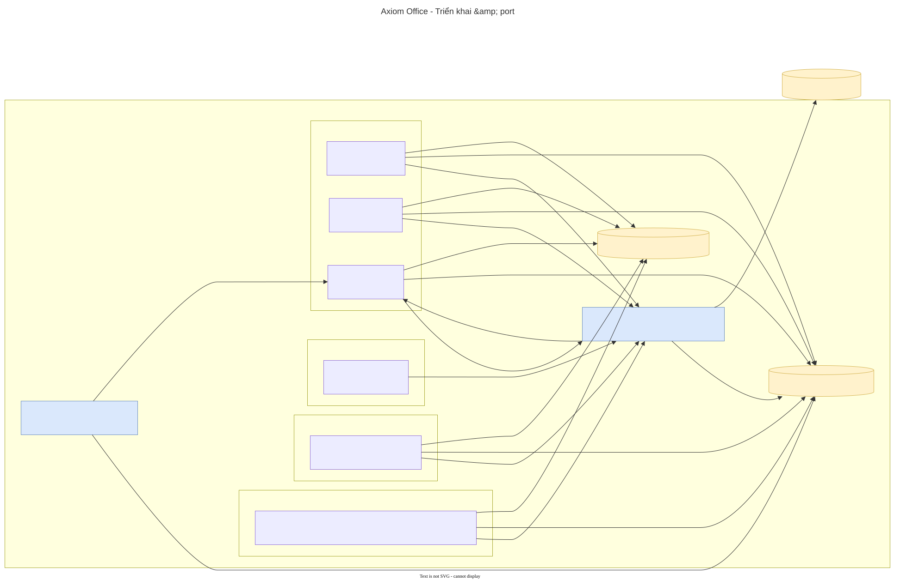
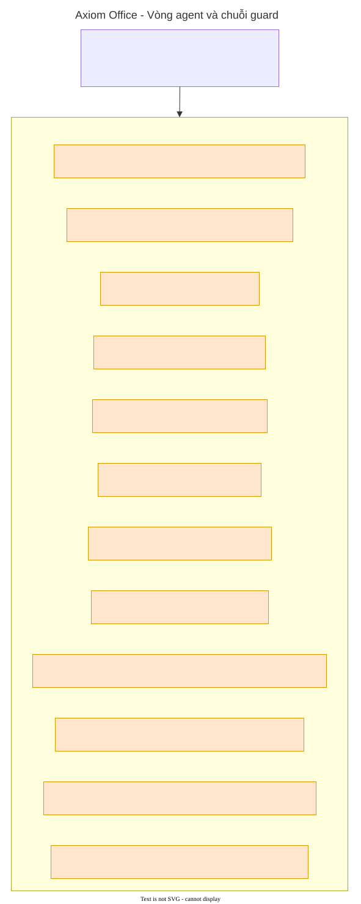
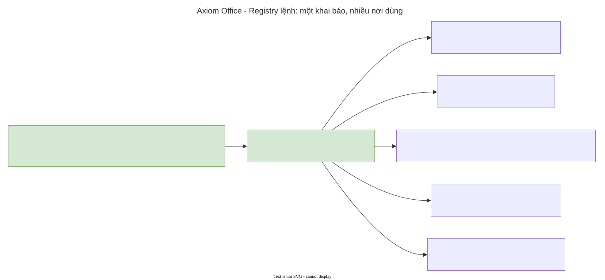
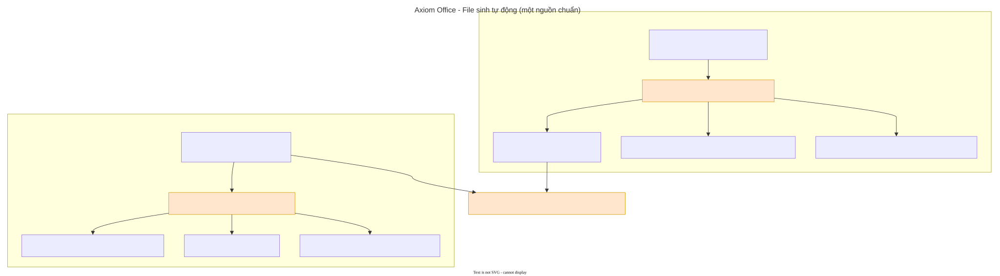
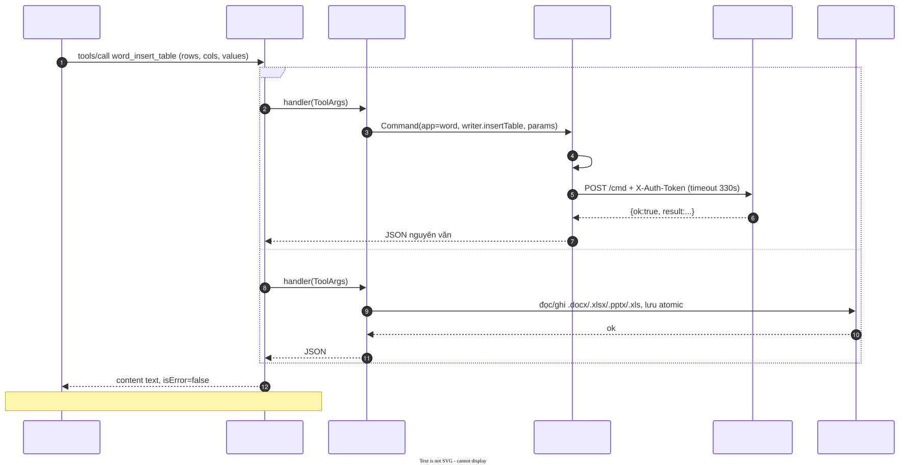
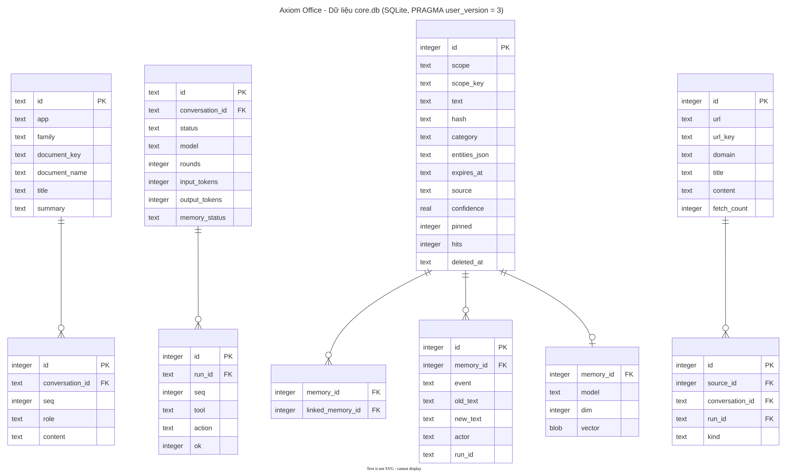

1. Giới thiệu & phạm vi
Axiom Office là một add-in nằm trong Word/Excel/PowerPoint (và các bản tương thích WPS, LibreOffice). Người dùng gõ yêu cầu tiếng Việt trong khung chat; một trợ lý AI sẽ đọc tài liệu đang mở, gọi các lệnh thao tác để sửa tài liệu trực tiếp, rồi hiển thị tiến trình và kết quả ngay trong khung chat.
Ba cách dùng
- Khung chat trong app — dành cho người dùng cuối.
- HTTP bridge trên
127.0.0.1— script/agent tuỳ ý. - MCP server (stdio) — Claude Desktop, Claude Code…
Nguyên tắc cốt lõi
- Chỉ chạy trong máy; mô hình LLM là điểm ra duy nhất ra Internet.
- Thao tác lên tài liệu đi qua hệ lệnh có kiểm tra và xác nhận.
- Rõ ràng, dễ kiểm: mỗi thao tác ghi audit.
Ngoài phạm vi (hiện tại)
- Không có tiến trình nền “job” (
axiom-core jobchưa có). - Chưa ký số chứng thư (code signing) các nhị phân.
- Tính năng WPS chỉ WPS Office thật; P8 tạm hoãn.
Tác nhân
| Tác nhân | Mong muốn | Cách tiếp cận hệ thống |
|---|---|---|
| Người dùng văn phòng | Nhờ AI thao tác tài liệu bằng tiếng Việt | Khung chat trong app (ribbon → “Hỏi AI”) |
| Developer / script | Điều khiển app đang mở từ code | HTTP JSON POST /cmd trên cổng bridge |
| AI agent ngoài | Dùng tài liệu như một bộ công cụ | MCP qua stdio (AxiomOffice.Host.exe mcp → Core) |
| Quản trị máy | Cài/gỡ một lần, sao lưu cấu hình | install.ps1/uninstall.ps1, khôi phục trong %LOCALAPPDATA% |
Số liệu nhanh (đối chiếu code): 2 tệp thực thi Windows (add-in + Core) · hệ lệnh C# khai báo 77 lệnh · catalog chung 80 lệnh (58 dành cho agent) · MCP server 50 công cụ chia 3 nhóm word/excel/ppt · 8 skill đóng gói sẵn · 6 tệp sinh tự động từ 2 nguồn chuẩn · SQLite schema 3 với 12 bảng.
2. Bối cảnh & container
Axiom Office chỉ gồm hai tệp thực thi phải triển khai trên Windows: thư viện add-in trong lòng tiến trình Office/WPS, và một tiến trình Go dùng chung tên Agent Core. Phần còn lại của hệ sinh thái (MCP, LibreOffice, WPS Linux) là các lớp mỏng gọi vào cùng một giao thức bridge.


Các container
| Container | Công nghệ | Trách nhiệm |
|---|---|---|
AxiomOffice.dll | C# .NET Framework 4.8, COM in-process, x64 | Ribbon, khung chat, HTTP bridge, hệ lệnh thao tác app, agent dự phòng chạy trong tiến trình |
AxiomOffice.Core.exe | Go thuần (một tệp ~12 MB) | Agent, prompt, gateway mô hình, tool, policy, bộ nhớ, skills, MCP client, và MCP server (subcommand mcp) |
AxiomOffice.Host.exe | C# .NET 4.8 console | Shim mcp (chuyển tiếp sang Core), trình duyệt lệnh (commands), llm-test, chế độ companion không cần app |
| Extension LibreOffice | Python + UNO, đóng gói .oxt | Bridge HTTP (47851–47853), chat pane, hệ lệnh tương đương, cổng UNO |
| WPS JS add-in | JavaScript ES5 (CEF) | Long-poll về Core, catalog lệnh, khung chat; Core đóng vai bridge trên cổng 47861 |
| MCP server ngoài | stdio hoặc Streamable HTTP | Công cụ tuỳ chọn người dùng khai trong mcp.json |
Kho dữ liệu & cấu hình
HKCU\Software\AxiomOffice | Cấu hình người dùng: cổng, token, provider mô hình, API key (DPAPI), cờ tính năng, ngôn ngữ UI |
%LOCALAPPDATA%\AxiomOffice\ | bridge.log, core.log, core.json (pid/port/version), sessions\<pid>.json, mcp.json, core\core.db |
core\core.db | SQLite: hội thoại, tin nhắn, lượt chạy, audit tool, bộ nhớ dài hạn, bản lưu nguồn web. Dùng chung cho cả bản Go lẫn phần C# |
skills\ | 8 skill đóng gói kèm, mỗi skill một thư mục có SKILL.md và tài nguyên tham chiếu |
Vì sao tách Core ra khỏi add-in? Một tiến trình Go dùng chung cho mọi app: sửa một chỗ, tất cả cùng hưởng; tiến trình người dùng riêng không cần quyền quản trị; và tệp Go dễ kiểm bằng go test mà không cần mở Office. Khi Core không khởi động được, add-in tự rơi về agent in-process nên vẫn dùng được tính năng cơ bản.
3. Các khối chức năng
Bản đồ dưới đây gom hệ thống theo khối chức năng thay vì theo tiến trình, để thấy rõ chỗ nào làm gì.

| Khối | Việc chính | Nằm ở |
|---|---|---|
| Giao diện | Ribbon, khung chat (tiến trình, thẻ xác nhận, ghi chú bộ nhớ), form cài đặt/quản trị | src/AxiomOffice/Ribbon/, Ai/ |
| Orchestrator | Dựng prompt, vòng gọi mô hình + chạy tool, phát sự kiện SSE, xác nhận, tự kiểm chứng | core-go/internal/agent |
| Gateway mô hình | Codec OpenAI/Anthropic, cửa sổ ngữ cảnh, thử lại, mô hình dự phòng, chuỗi guard | core-go/internal/model |
| Tool registry | Công cụ agent gọi được: office_action, skill, bộ nhớ, todo, template, web, MCP | core-go/internal/tools |
| Policy + xác nhận | Quyết định lệnh nào phải hỏi người dùng trước khi ghi/xoá | internal/policy, agent/confirm.go |
| Bộ nhớ dài hạn | Lưu/khôi phục ghi nhớ theo người dùng, tài liệu, phong cách; trích xuất tự động | core-go/internal/memory |
| Hệ lệnh | Một khai báo lệnh, phân phối tới bridge/agent/MCP/tài liệu | Bridge/CommandDispatcher*.cs |
| Tích hợp host | Cổng nối tiếp COM/UNO, thử lại khi app bận, nhận diện loại app | Bridge/ComGate.cs, LO gate.py |
| Xử lý file | Đọc/ghi .docx .xlsx .pptx (và .xls) không cần mở app | core-go/internal/{ooxml,xlsx,docx,pptx,sheet,cfb} |
Ba đường thực thi cùng đích
Đường 1 — Chat trong app
Khung chat → Core (/v1/runs + SSE) → office_action → POST /cmd → COM/UNO. Sửa tài liệu hiện ngay trên màn hình.
Đường 2 — MCP
Claude/agent ngoài → Host.exe mcp → Core axiom-core mcp → làn live (bridge) hoặc làn file (OOXML thuần Go).
Đường 3 — Script/HTTP
Chương trình bất kỳ → POST /cmd trên cổng bridge của app với X-Auth-Token.
4. Luồng chạy & khởi động
Đây là kịch bản quan trọng nhất: người dùng gõ một câu, phần mềm biến nó thành thay đổi thật trên tài liệu.

run.completed, kèm nhánh xác nhận và ghi nhớ nền. Nguồn: docs/architecture/src/04-run-sequence.mmdDiễn giải từng bước
- Nhận yêu cầu. Khung chat gọi
POST /v1/runskèm prompt, thông tin tài liệu, cổng bridge vàconversationId; Core trả vềrunId. - Theo dõi tiến trình. Khung chat mở SSE
GET /v1/runs/{id}/eventsvà cập nhật từng bước (đang suy nghĩ, đang gọi tool…). - Nạp allowlist. Core hỏi bridge
GET /commandsđể chỉ cho mô hình thấy những lệnh hợp lệ với loại app đang mở (chỉ lệnh.ForAgent()). - Dựng prompt. Ghép quy tắc + chỉ mục skill + bộ nhớ liên quan + hội thoại gần đây + tình trạng tài liệu thành một prompt duy nhất.
- Vòng tool-calling. Mô hình trả lời hoặc xin gọi tool (ví dụ
load_skill bang-diem, rồioffice_actionvớiet.writeRange). - Xác nhận. Lệnh rủi ro (lưu, ghi đè, xoá slide, thay thế hàng loạt) bị chặn lại; UI hiện thẻ Đồng ý / Từ chối và chờ
POST /v1/runs/{id}/confirm. - Thực thi. Core gọi
POST /cmdtới bridge; bridge qua cổng nối tiếp (COM gate) rồi chạm object model; người dùng thấy thay đổi ngay. - Kết thúc. Core phát
run.completed, rồi chạy nền trích xuất ghi nhớ và tóm tắt hội thoại.

core.json, khởi động Core khi cần, xác thực session bridge, và cơ chế dự phòng in-process. Nguồn: docs/architecture/src/11-core-startup.mmdMột bản Core cho mỗi người dùng. Core giữ mutex có tên \Local\AxiomOffice.Core để không chạy trùng; chọn cổng 47840 (bận thì 47841–47849); ghi core.json ngay khi sẵn sàng để lần sau khởi động nhanh. Nếu Core không phản hồi, khung chat dùng lại agent C# trong tiến trình — đây là “cầu chì” chứ không phải đường chính.
5. Triển khai & cổng
Mọi thứ chạy trong một tài khoản người dùng. Chỉ có một cửa ra Internet (nhà cung cấp mô hình). Mỗi app mở cổng bridge riêng trên 127.0.0.1 để tra cứu chính xác instance nào đang chạy.

Bảng cổng mặc định
| Host | AppKind | family | Cổng |
|---|---|---|---|
| WPS Writer | wps | wps | 47821 |
| WPS Spreadsheets | et | wps | 47822 |
| WPS Presentation | wpp | wps | 47823 |
| Microsoft Word | wps | office | 47831 |
| Microsoft Excel | et | office | 47832 |
| Microsoft PowerPoint | wpp | office | 47833 |
| LibreOffice Writer / Calc / Impress | wps/et/wpp | libreoffice | 47851 / 47852 / 47853 |
| WPS Linux (Core đóng vai bridge) | — | — | 47861 |
| Agent Core (HTTP API) | — | — | 47840 (+47841–47849) |
Cổng vào & hàng rào
Mọi cửa vào đều là loopback và đều bị kiểm tra. Chi tiết guard của bridge add-in (thứ tự đánh giá):
| Điều kiện | Kết quả |
|---|---|
Có header Origin (khác rỗng) → chặn | 403 — chống lời gọi từ trình duyệt |
Thiếu/sai X-Auth-Token (khi token đã đặt) | 401 |
POST /cmd mà Content-Type không phải JSON | 415 |
Thân JSON hỏng / thiếu action | 400 |
Riêng Core (Go) áp cùng kiểu guard: chặn Origin (403), yêu cầu X-Auth-Token cho mọi đường trừ GET /health (401), và bắt buộc application/json cho request có thân (415). Kênh /wps/* có luật xác thực riêng trong wpsbridge.DecideWPSAuth.
Khoá cấu hình chính
Port / PortOffice | Cổng bridge cho WPS (47821) và Office (47831); các app còn lại cộng 1 và 2 |
CorePort, CoreEnabled | Cổng Agent Core (47840) và cờ bật/tắt Core |
Token | Chuỗi 32 hex sinh khi cài; dùng cho mọi request bridge và Core |
Provider, Endpoint, Model, ApiKey | Cấu hình nhà cung cấp mô hình; API key mã hoá bằng DPAPI |
MemoryEnabled, AutoExtract, Verify, VisualQa, Reasoning, UiLanguage | Cờ tính năng chat/bộ nhớ/kiểm tra |
Thứ tự nạp cấu hình trong Core: biến môi trường AXIOM_* > nguồn nền tảng (HKCU trên Windows, ~/.config/axiom-office/config.json trên Linux) > giá trị mặc định.
6. Bên trong Agent Core
Core là một mô-đun Go axiomoffice/core. Toàn bộ logic “nặng” nằm ở đây; add-in chỉ lo giao diện và chạm app.

Bản đồ gói
| Gói | Trách nhiệm |
|---|---|
cmd/axiom-core | Khởi động/dừng, mutex một-bản, chọn cổng, nhánh con mcp và doctor |
internal/api | HTTP API v1 + kênh WPS, guard, SSE, phong bì {"ok":…} |
internal/agent | Manager/Orchestrator, dựng prompt, vòng chạy, sự kiện, xác nhận, verify, phong cách tài liệu, ngôn ngữ |
internal/model | Codec OpenAI/Anthropic, SSE, cửa sổ ngữ cảnh, profile model, chuỗi guard |
internal/tools | Registry tool + office_action, skill, bộ nhớ, todo, template, web, visual, MCP; giới hạn gọi, chống ghi đè, cắt ngắn kết quả |
internal/policy | Quyết định xác nhận cho lệnh rủi ro (bản dịch PolicyEngine) |
internal/memory | Service ghi nhớ: trích xuất, truy hồi (BM25 + entity boost + embedding), lịch sử, chuẩn hoá theo app |
internal/store | SQLite + migration (schema 1→3) và repository hội thoại/lượt chạy/audit/nguồn web |
internal/skills | Chỉ mục & nạp SKILL.md, quét lại mỗi 2 giây, kiểm tra tên/mô tả/not_for |
internal/mcp | MCP client: khởi động server con, bắt tay, liệt kê/gọi tool, server office tích hợp |
internal/mcpserver | MCP server do Core cung cấp (stdio), 50 công cụ chia nhóm |
internal/office | Client bridge, thư mục session, cắt ngắn kết quả đọc lớn |
internal/{ooxml,xlsx,docx,pptx,sheet,cfb} | Engine OOXML thuần Go: zip/XML, bảng tính, văn bản, trình chiếu, tiện ích ô, đọc container OLE2 |
internal/{config,corefile,corelog,doctor,filesafe,instance,setup,templates,textutil,wpsbridge} | Hạ tầng: cấu hình/khoá, core.json, log, chẩn đoán, ghi tệp an toàn, mutex, dữ liệu wizard, mẫu nhúng, tiện ích chuỗi, bridge WPS |
HTTP API của Core
| Nhóm | Đường dẫn |
|---|---|
| Sức khoẻ | GET /health (không cần token) |
| Lượt chạy | POST /v1/runs · GET /v1/runs/{id} · GET /v1/runs/{id}/events (SSE) · POST /v1/runs/{id}/cancel · POST /v1/runs/{id}/confirm |
| Hội thoại | GET /v1/conversations · GET /v1/conversations/{id} · DELETE /v1/conversations/{id} |
| Bộ nhớ | GET/POST /v1/memory · PATCH/DELETE /v1/memory/{id} · POST /v1/memory/{id}/restore · GET /v1/memory/{id}/history · DELETE /v1/memory · GET /v1/memory/export · POST /v1/memory/import |
| Skills / MCP / Audit | GET /v1/skills · POST /v1/skills/reload · GET /v1/mcp · GET /v1/audit |
| Setup / LLM | GET /v1/setup · POST /v1/llm/test · GET /v1/llm/models |
| Quản trị | POST /v1/admin/shutdown |
| Kênh WPS | POST /wps/addin/ · POST /wps/v1/poll · POST /wps/v1/result · /wps/v1/runs… |
Sự kiện SSE
Giao thức SSE dùng id:, event:, data:; có thể nối lại bằng ?after= hoặc Last-Event-ID; giữ nhịp ping mỗi 15 giây.
| Nhóm | Sự kiện |
|---|---|
| Vòng chạy | run.started, run.reasoning, run.reasoning.live, run.progress, run.model_switched, run.todos |
| Tool | tool.started, tool.finished, skill.loaded, memory.written |
| Xác nhận | confirm.required, confirm.resolved |
| Kết thúc | run.completed, run.cancelled, run.failed, run.timedout, run.stopped |
| Khác | ping (giữ kết nối) |
Vòng agent & chuỗi guard
Phần dễ lỗi nhất của một agent là vòng lặp: mô hình có thể trả lời rỗng, lặp lệnh, vượt ngân sách, hoặc gặp app sập. Vì vậy RunAgent được giữ mỏng — chỉ gọi mô hình và chạy tool; mọi cơ chế chống lỗi là một guard độc lập, mắc vào 4 móc onReply / beforeCall / afterTools / recover.

| # | Guard | Xử lý tình huống |
|---|---|---|
| 1 | emptyReplyGuard | Trả lời rỗng hoặc bị cắt vì length → nhắc viết lại một lần |
| 2 | verifyGuard | Sau khi sửa tài liệu, tự đọc lại để kiểm chứng |
| 3 | identicalCallGuard | Phát hiện lệnh y hệt lặp nhiều lần → dừng |
| 4 | sameTaskGuard | Phát hiện mô hình làm lại cùng một việc |
| 5 | oncePerReplyGuard | Giới hạn write_todos một lần mỗi lượt trả lời |
| 6 | finalGuard | Tool báo “Final” thì kết thúc ngay, không gọi model thêm |
| 7 | abortGuard | App sập (AppGone) → dừng lượt chạy |
| 8 | contextClearGuard | Dọn ngữ cảnh khi vượt khoảng 40k token |
| 9 | heavyRunGuard | Lượt chạy “nặng” (≥30 vòng hoặc ≥500k token) → siết lại |
| 10 | repeatedFailureGuard | Một lỗi lặp y hệt 3 lần → dừng |
| 11 | budgetGuard | Ngân sách token: 80% nhắc nhở, 90% tắt tool, 100% dừng |
| 12 | toolsUnsupportedGuard | Provider không hỗ trợ tool → chạy chế độ chat thường |
| 13 | contextOverflowGuard | Tràn cửa sổ ngữ cảnh → dọn mạnh và thử lại (tối đa 2 lần) |
| 14 | fallbackGuard | Chuyển sang model dự phòng, trừ lỗi cấu hình 400/401 |
7. Hệ lệnh & file sinh tự động
Hệ lệnh là “điểm hẹp” giữa mô hình và app: mô hình chỉ có thể yêu cầu những hành động đã được khai báo. Một lệnh khai báo một lần, rồi tự động xuất hiện ở mọi nơi cần.

Command(...) tới dispatch, tool office_action, mô tả MCP, README và test đối chiếu. Nguồn: docs/architecture/src/07-command-registry.mmdNhóm lệnh (khai báo trong C#)
| Nhóm | Số lệnh | Loại app | Ví dụ |
|---|---|---|---|
| Chung | 4 | mọi app | app.info, ai.ask, ui.askpane, app.screenshot |
writer.* | 28 | wps (Word/WPS) | writer.insertTable, writer.outline, writer.restyle, writer.lockSelection, writer.checkTables |
et.* | 22 | et (Excel/ET) | et.writeRange, et.readRange, et.checkRange |
wpp.* | 23 | wpp (PowerPoint/WPP) | wpp.addSlideFromTemplate, wpp.setShapeText, wpp.checkLayout |
| Tổng | 77 | Trong đó catalog chung catalog/live-commands.json có 80 mục, 58 đánh dấu agent:true | |
Thêm một lệnh mới
- Khai báo
Command(...)cùng handler (ví dụ trongCommandDispatcher.Writer.cs), ghi rõkind, tham số, và.ForAgent()nếu muốn AI gọi được. - Cập nhật registry Python tương ứng (
src/AxiomOffice.LibreOffice/.../axiom/commands.py) để giữ tương đương đa host. - Chạy
python scripts/generate_mcp_commands.pyđể sinh lại catalog, Go, và JS. - Viết test — CI bắt buộc mọi lệnh phải được test gọi tới.

| Nguồn chuẩn | Generator | Tệp sinh ra |
|---|---|---|
Registry lệnh Python (axiom.commands) | scripts/generate_mcp_commands.py | catalog/live-commands.json |
core-go/internal/mcpserver/livecommands_gen.go | ||
src/AxiomOffice.WPS/commands.js (chỉ mảng CATALOG) | ||
catalog/setup.json | scripts/generate_setup_catalog.py | src/AxiomOffice/Setup/SetupCatalog.cs |
axiom/setup_catalog.py (LibreOffice) | ||
core-go/internal/setup/catalog_gen.go |
Bất biến quan trọng: sáu tệp sinh tự động không được sửa tay. CI chạy generate_mcp_commands.py --check và generate_setup_catalog.py --check; nếu lệch nguồn, build đỏ. Ngoài ra check_version.py bắt phiên bản trong VERSION khớp 4 bản sao, và check_i18n.py bắt bảng dịch phủ hết chuỗi UI.
8. MCP: làn live & làn file
Cùng một bộ công cụ tài liệu, nhưng có hai làn tuỳ vào việc app có đang mở hay không. Làn live đi qua bridge tới app đang chạy (thấy thay đổi trên màn hình); làn file sửa trực tiếp tệp OOXML mà không cần mở app.

tools/call. Nguồn: docs/architecture/src/09-mcp-lanes.mmdNhóm công cụ
| Nhóm | Tổng | Làn file | Làn live |
|---|---|---|---|
word (server word-tools) | 19 | 5 (doc_profile, doc_get_text, doc_find_text, doc_extract_table, doc_create) | 14 (word_health, word_command, word_insert_table, word_replace_all, word_export_pdf, word_undo, word_save, …) |
excel (server excel-tools) | 15 | 11 (excel_read, excel_write, excel_create, excel_convert, excel_format_range, …) | 4 (wps_health, wps_live_command, wps_live_read_range, wps_live_write_range) |
ppt (server ppt-tools) | 15 | 4 (ppt_profile, ppt_get_text, ppt_create, ppt_add_slide_file) | 11 (ppt_command, ppt_add_slide, ppt_add_text, ppt_add_table, ppt_set_notes, ppt_delete_slide, ppt_export_pdf, ppt_save, …) |
| Chung | 1 | office_sessions — liệt kê các instance app đang mở (luôn thêm cuối) | |
Chi tiết đáng nhớ
- Cách gọi:
axiom-core mcp [all|word|excel|ppt] [--list]. Tên server:office-toolskhiall, ngược lại<nhóm>-tools. - Phiên bản giao thức ưu tiên:
2025-11-25→2025-06-18→2025-03-26→2024-11-05. Một thông điệp JSON-RPC mỗi dòng. - Chuyển tiếp:
AxiomOffice.Host.exe mcpchỉ tìmAxiomOffice.Core.execạnh nó rồi bơm stdin/stdout/stderr nguyên byte — toàn bộ MCP nằm ở Go. - Công cụ MCP ngoài (người dùng khai trong
mcp.json) xuất hiện trong agent với tênmcp__<server>__<tool>. - Xác nhận: server không tin cậy → luôn hỏi; server
officetích hợp → chỉ hỏi khi ghi vào tệp đã tồn tại trên đĩa. - Kết quả: lỗi kết nối app vẫn trả
{"ok":false,"error":…}như một kết quả bình thường để mô hình đọc được và xử lý.
9. Dữ liệu & bộ nhớ
Tất cả nằm trong một tệp SQLite core.db, dùng chung giữa bản Go và phần C#. Ghi theo WAL, khoá ngoại bật, thử lại khi bận.

core.db (PRAGMA user_version = 3). Hội thoại, lượt chạy, audit, bộ nhớ + lịch sử + liên kết + embedding, và bản lưu nguồn web. Nguồn: docs/architecture/src/10-data-er.mmdMười hai bảng theo phiên bản schema
| Schema | Bảng | Nội dung |
|---|---|---|
| v1 | conversations | Hội thoại: app, family, khoá tài liệu, tiêu đề, tóm tắt |
| v1 | messages | Tin nhắn theo thứ tự trong hội thoại |
| v1 | runs | Lượt chạy: trạng thái, model, số vòng, token vào/ra |
| v1 | tool_calls | Audit mọi lần gọi tool (tool, action, ok, lỗi, thời gian) |
| v2 | memories | Ghi nhớ dài hạn: scope, khoá scope, text, hash, category, độ tin cậy, ghim, hết hạn, xoá mềm |
| v2 | memories_fts | Chỉ mục FTS5 (unicode61 remove_diacritics 2) cho tìm kiếm tiếng Việt |
| v2 | memory_links | Liên kết bản ghi nhớ mới với bản cũ bị thay thế |
| v2 | memory_history | Lịch sử ADD / UPDATE / DELETE / RESTORE / PIN / EXPIRES |
| v2 | memory_embeddings | Vector tuỳ chọn phục vụ truy hồi ngữ nghĩa |
| v3 | web_sources | Kho nguồn web đã tải (URL, domain, tiêu đề, nội dung, số lần lấy) |
| v3 | web_source_refs | Nguồn nào được dẫn trong lượt nào |
| v3 | web_sources_fts | FTS5 + trigger đồng bộ cho kho nguồn web |
Phạm vi bộ nhớ
| Scope | Ý nghĩa |
|---|---|
user | Áp dụng cho mọi tài liệu (sở thích, cách xưng hô…) |
document | Chỉ tài liệu đang mở (khoá theo document_key) |
org-style | Phong cách chung của tổ chức (font, bố cục, giọng văn) |
doc-style | Phong cách riêng của một tài liệu |
skill | Ghi nhớ gắn với một skill |
Ngoài scope, ghi nhớ còn có chiều app (wps/et/wpp) để cùng một người dùng vẫn giữ ưu tiên khác nhau cho Word/Excel/PowerPoint. Hằng số đáng lưu ý: xoá mềm giữ 30 ngày · coi là gần trùng khi cosine ≥ 0.96 · độ dài fact tối đa 300 ký tự · trích xuất chỉ nhận độ tin cậy ≥ 0.6, tối đa 5 fact, prompt tối thiểu 15 ký tự.
Điểm lệch tài liệu: ARCHITECTURE.MD ghi “schema 2”, nhưng mã nguồn (internal/store/db.go) đặt SchemaVersion = 3 với bảng web_sources bổ sung. Cập nhật này có từ nhánh bộ nhớ; tài liệu MD cần sửa lại cho khớp.
10. Kiểm thử & CI
Độ tin cậy đến từ một hệ kiểm thử nhiều tầng: unit Go/JS/Python, e2e với LLM giả, đối chiếu “oracle”, và test trên app thật. CI chạy trên cả Linux lẫn Windows.

| Bộ | Kiểm gì | Chạy ở đâu |
|---|---|---|
core-go (go test) | Unit cho toàn bộ gói Go | Mọi nơi |
tests/core | e2e Core thật + LLM giả + bridge giả, chia 17 phần (guards, skills, confirm, memory, mcp, cancel, verify…) | Mọi nơi |
tests/lo | Extension LibreOffice: param, chức năng chat/SSE, wizard, Calc, dialog… không cần LibreOffice | Mọi nơi (unittest) |
tests/wps | Add-in JS: registry, poll, probe, logic pane, theme; thêm e2e và live | Node --test / Xvfb |
tests/mcp-host | Giao thức MCP, 50 tool, đối chiếu oracle, và diff Go ↔ C# | Cả hai binary |
tests/oracle | Server Python tham chiếu word/excel/ppt (20/17/16 tool) để so parity | CI |
tests/live | App thật (Office/WPS/LibreOffice), ghi/so “golden” | Máy có app |
tests/linux, tests/bench | Cài/đóng gói Linux; benchmark Calc so với Claude Code | Linux |
Hai job CI (.github/workflows/ci.yml)
Job linux (ubuntu-24.04)
Unit extension → npm ci + test add-in WPS → go vet/go test + build Core → e2e Core (fake LLM) → WPS e2e → MCP portable → cài LibreOffice + Xvfb chạy test live (continue-on-error) → đóng gói .tar.gz và upload artifact.
Kèm bước “file sinh không được lệch nguồn”: generate_*.py --check + check_version.py.
Job windows (windows-latest)
Unit extension → go test → build add-in + Host bằng Roslyn csc (/platform:x64 /langversion:7.3) → e2e Core đầy đủ → MCP portable trên axiom-core.exe.
Số liệu công bố trong STATUS.md/README.md (chưa chạy tại đây): e2e Core Go 155/155, .NET 155/155, LibreOffice thật 159/159, MCP portable 61/61, oracle diff 61/62. Nên xem số liệu là “tuyên bố kèm tài liệu”, không phải kết quả vừa đo.
11. Build, cài đặt, đóng gói
Không phụ thuộc .NET SDK hay Visual Studio: build dùng csc (Roslyn đi kèm VS2022, hoặc csc.exe của .NET Framework) và Go toolchain.
Script chính
| Script | Việc |
|---|---|
scripts/build.ps1 | Biên dịch AxiomOffice.dll + AxiomOffice.Host.exe (x64, langversion 7.3), nhúng bảng dịch, build Core Go; dùng Restart Manager để phát hiện tệp bị khoá |
scripts/install.ps1 | Đăng ký COM add-in trong HKCU (không cần admin), seed cấu hình, sinh token 32 hex, in cấu hình MCP; kèm migrate từ bản WpsAiBridge cũ |
scripts/uninstall.ps1 | Gỡ đăng ký; -Purge xoá cả HKCU và %LOCALAPPDATA%\AxiomOffice |
scripts/package.ps1 | Đóng dist\AxiomOffice-<version>-<ngày>.zip gồm DLL, Host, Core, skills, script cài/gỡ, và hướng dẫn |
scripts/libreoffice.ps1 / .sh | Đóng gói & cài .oxt qua unopkg, xem trạng thái/port/log |
scripts/package_oxt.py | Packer .oxt thuần Python (chỉ stdlib) |
scripts/linux/package.sh / install.sh | Bản Linux: tarball (Core + skills + .oxt + WPS add-in) và cài không cần root, có tuỳ chọn systemd --user |
scripts/wps/install_jsaddon.py | Đăng ký JS add-in WPS trên Linux vào publish.xml |
scripts/check_version.py / check_i18n.py | Kiểm phiên bản (5 nơi) và độ phủ bản dịch UI (418 khoá) |
Định vị sản phẩm
Windows
Add-in COM + Core Go. Cài bằng install.cmd trong zip; không cần quyền admin.
Linux
Core Go (CGO tắt) + extension .oxt cho LibreOffice; cấu hình trong ~/.config/axiom-office/; WPS qua JS add-in.
Đa ngôn ngữ
Chuỗi gốc tiếng Việt; bảng dịch JSON (lang/*.json) nhúng vào DLL hoặc đặt cạnh DLL để ghi đè; đổi ngôn ngữ ngay trong ribbon.
12. Quyết định kiến trúc
Các quyết định dưới đây (AD-1…AD-18) là “hợp đồng” của dự án; sửa một cái thường kéo theo nhiều chỗ khác.
| Mã | Quyết định | Lý do | Đánh đổi |
|---|---|---|---|
| AD-1 | COM add-in .NET Framework 4.8, C# 7.3, không NuGet | Có sẵn trên mọi Windows 10/11; Office và WPS đều nạp qua mscoree | Không dùng .NET hiện đại, thư viện ngoài |
| AD-2 | Late-bound dynamic, không PIA | Một DLL cho cả Office và WPS, không phụ thuộc phiên bản Office | Không kiểm tra kiểu lúc biên dịch |
| AD-3 | Dispinterface cho mỗi interface host gọi | Office/WPS gọi qua IDispatch; khai báo IUnknown làm host crash | Phải khai báo DispId thủ công |
| AD-4 | HTTP loopback làm cửa vào chung | Ngôn ngữ nào cũng gọi được, debug bằng curl | Tự lo token, chặn Origin |
| AD-5 | Một cổng COM toàn cục (ComGate) | Object model Office không an toàn đa luồng (từng crash Word) | Lệnh chạy tuần tự |
| AD-6 | SSE bằng poll-diff 500 ms | Chạy giống nhau trên Office và WPS, không cần COM event sink | Trễ tải 500 ms |
| AD-7 | Agent chỉ có một tool office_action | Prompt gọn; thêm lệnh không đổi schema tool | Model phải đọc danh sách lệnh trong mô tả |
| AD-8 | Registry lệnh khai báo cạnh handler | Một chỗ sửa; dispatcher, agent, MCP, README không lệch nhau | Mô tả tiếng Việt và gợi ý tiếng Anh nằm cùng dòng |
| AD-9 | MCP server là subcommand mcp của Core Go (cùng hợp đồng 50 tool); Host.exe mcp chỉ forward byte | Một bản duy nhất cho Windows + Linux, không lệch hợp đồng | Shim giữ để cấu hình MCP client cũ không phải đổi |
| AD-10 | Mọi đăng ký trong HKCU | Không cần admin | Chỉ cài cho từng người dùng |
| AD-11 | Agent Core là process riêng viết bằng Go (một file ~12 MB, không runtime, không cgo) | SQLite thuần Go; một agent cho mọi app; không làm nặng process Office; build chéo Windows/Linux | Thêm một process và giao thức HTTP nội bộ |
| AD-12 | Core chỉ thao tác tài liệu qua bridge (/cmd), không gọi COM | Một đường thực thi lệnh duy nhất (allowlist, ComGate, Undo); Core không phụ thuộc Office | Mỗi lệnh thêm một vòng HTTP loopback |
| AD-13 | Pane thử Core trước, dự phòng agent in-process; đã có runId thì không chạy lại | Pane không bao giờ bị khoá vì Core; không sửa tài liệu hai lần | Hai bản agent phải giữ hành vi gần nhau |
| AD-14 | Skill theo chuẩn Agent Skills (thư mục + SKILL.md), nạp 3 tầng | Hệ sinh thái sẵn có; prompt gọn (chỉ mục ~100 token/skill) | Không chạy script trong skill |
| AD-15 | Memory tự làm theo ý tưởng mem0 2.2.1 (chỉ-ADD) | Dữ liệu ở lại máy, không Python/Docker; model không tự sửa/xoá memory | Tự bảo trì thuật toán chấm điểm; embedding tuỳ chọn |
| AD-16 | Policy xác nhận trong Core, trả lời qua pane | Người dùng quyết định thao tác rủi ro; audit đầy đủ | Lượt chạy có thể dừng chờ tới 120 s |
| AD-17 | QA hai mức: cấu trúc bằng số (mặc định) + thị giác (tuỳ chọn) | Agent “mù” vẫn soát được tràn chữ/chồng shape/dữ liệu lạc với chi phí thấp | QA thị giác tốn token, cần model đọc ảnh |
| AD-18 | Vòng agent chạy qua chuỗi guard; RunAgent chỉ gọi model + chạy tool, mỗi cơ chế chống lỗi là một guard | Thêm cơ chế mới không sửa vòng lặp | Thứ tự guard có nghĩa, phải giữ khi thêm guard mới |
13. Rủi ro & giới hạn
| Rủi ro / giới hạn | Ảnh hưởng | Hướng xử lý |
|---|---|---|
| Exe Core (~12 MB, Go) và DLL chưa ký số | Máy có chính sách chỉ nạp add-in đã ký sẽ không nạp; diệt virus có thể chặn exe | Ký bằng certificate của tổ chức |
| Lệnh WPS Spreadsheets/Presentation chưa chạy test live | Có thể có khác biệt object model chưa phát hiện | Chạy test_live_commands.py --wps |
| Bridge xử lý HTTP tuần tự | Request tới cùng app chờ nhau (trừ ai.ask và SSE chạy thread riêng) | Lệnh COM vẫn tuần tự qua ComGate; ai.ask tách thread để Core gọi ngược /cmd không kẹt |
| Model free/chậm | Lượt dài, có lúc > 60 s mỗi request | Timeout 120 s, thử lại, nhắc khi trả lời rỗng; model hỏng thì chuyển dự phòng |
WPS có thể đăng ký đè Word/Excel/PowerPoint.Application | Companion word|excel|ppt tạo ra WPS | Mở app Office trực tiếp (add-in tự nạp) |
| Token và key đọc được bởi mọi process cùng tài khoản | Mô hình tin cậy là tài khoản Windows | Chấp nhận (giống mọi app desktop) |
Excel: #N/A đọc ra null; .xls chỉ đọc; et.undo không hoàn tác thay đổi qua COM | Giới hạn của COM/Excel | Ghi rõ trong tài liệu |
14. Cấu trúc mã nguồn
wps-ai-bridge/
├─ ARCHITECTURE.MD tài liệu kiến trúc HLD+LLD
├─ ARCHITECTURE.html <- tài liệu này (kèm sơ đồ draw.io)
├─ README.md / STATUS.md / CHANGELOG.md
├─ VERSION nguồn chuẩn phiên bản (0.1.0)
├─ catalog/ live-commands.json, setup.json (đầu ra sinh)
├─ docs/
│ ├─ architecture/ sơ đồ: src/*.mmd, img/*.drawio, img/*.drawio.svg
│ └─ plans/ 30 tệp kế hoạch theo phase
├─ skills/ 8 skill đóng gói + _design/tokens.json
├─ scripts/ build/install/package/generate/check, Linux, WPS
├─ src/
│ ├─ AxiomOffice/ add-in C# (Bridge, Ai, Ribbon, Localization, Setup)
│ ├─ AxiomOffice.Host/ HostProgram.cs, Mcp/McpHost.cs
│ ├─ AxiomOffice.LibreOffice/ extension Python + UNO (.oxt)
│ └─ AxiomOffice.WPS/ JS add-in (main/commands/pane-core/probe)
├─ core-go/ Agent Core (Go)
│ ├─ cmd/axiom-core/ main + subcommand mcp, doctor
│ └─ internal/ agent, model, tools, policy, memory, store,
│ skills, mcp, mcpserver, office, ooxml, xlsx,
│ docx, pptx, sheet, cfb, config, setup, …
└─ tests/ core, lo, wps, mcp-host, oracle, live, linux, bench, ui, win15. Thuật ngữ
| Thuật ngữ | Nghĩa |
|---|---|
| Add-in | Thư viện nạp vào tiến trình Office/WPS; bản này do AxiomOffice.dll đảm nhiệm |
| Agent Core | Tiến trình Go dùng chung chạy agent, bộ nhớ, MCP |
| Bridge | HTTP loopback trong app cho phép thực thi lệnh |
| ComGate / UnoGate | Cổng nối tiếp mọi lệnh vào object model, tránh đa luồng |
| Hệ lệnh / registry | Danh sách hành động khai báo một lần, dùng ở nhiều nơi |
office_action | Tool duy nhất để agent gọi lệnh thao tác tài liệu |
| Skill | Thư mục + SKILL.md mô tả cách làm một việc (Agent Skills) |
| Guard | Một cơ chế chống lỗi mắc vào vòng agent |
| Làn live / làn file | Thao tác qua app đang mở / thao tác trực tiếp tệp OOXML |
| Scope (bộ nhớ) | Phạm vi áp dụng ghi nhớ: user, document, org-style, doc-style, skill |
| AppKind | Loại app logic: wps (văn bản), et (bảng tính), wpp (trình chiếu) |
| OOXML | Định dạng tệp Office (.docx/.xlsx/.pptx) là một gói zip + XML |
| SSE | Server-Sent Events — kênh một chiều đẩy tiến trình về khung chat |
| MCP | Model Context Protocol — chuẩn cho agent ngoài gọi công cụ |